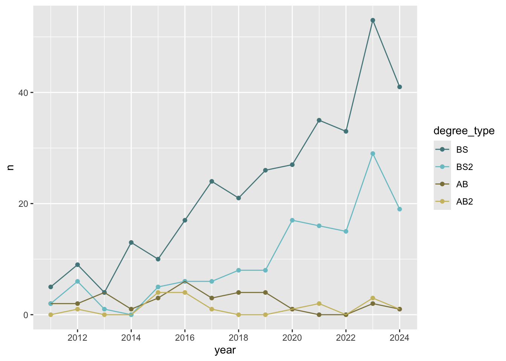
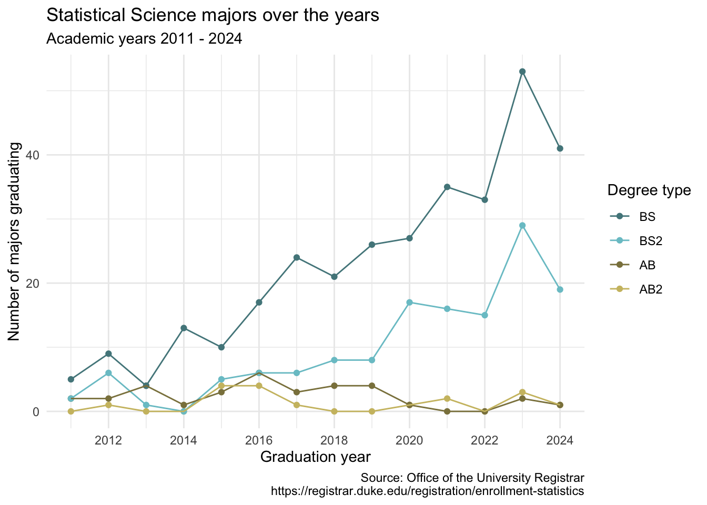

library(tidyverse)AE 06: StatSci majors + data tidying
Suggested answers
Answers
Getting started
Packages
We’ll use the tidyverse package for this analysis.
Data
The data are available in the data folder.
statsci <- read_csv("data/statsci.csv")Rows: 4 Columns: 15
── Column specification ────────────────────────────────────────────────────────
Delimiter: ","
chr (1): degree
dbl (14): 2011, 2012, 2013, 2014, 2015, 2016, 2017, 2018, 2019, 2020, 2021, ...
ℹ Use `spec()` to retrieve the full column specification for this data.
ℹ Specify the column types or set `show_col_types = FALSE` to quiet this message.And let’s take a look at the data.
statsci# A tibble: 4 × 15
degree `2011` `2012` `2013` `2014` `2015` `2016` `2017` `2018` `2019` `2020`
<chr> <dbl> <dbl> <dbl> <dbl> <dbl> <dbl> <dbl> <dbl> <dbl> <dbl>
1 Statist… NA 1 NA NA 4 4 1 NA NA 1
2 Statist… 2 2 4 1 3 6 3 4 4 1
3 Statist… 2 6 1 NA 5 6 6 8 8 17
4 Statist… 5 9 4 13 10 17 24 21 26 27
# ℹ 4 more variables: `2021` <dbl>, `2022` <dbl>, `2023` <dbl>, `2024` <dbl>Pivoting
Pivot the statsci data frame longer such that
- each row represents a degree type / year combination,
yearandnumber of graduates for that year are columns,yearis numerical,NAs in counts are replaced with 0s,degree_typehas levels BS, BS2, AB, and AB2 (in this order), and- the resulting data frame is saved as
statsci_longer.
Review the code below with your neighbor and come up with at least one question about the code.
statsci_longer <- statsci |>
pivot_longer(
cols = -degree,
names_to = "year",
names_transform = as.numeric,
values_to = "n"
) |>
mutate(n = if_else(is.na(n), 0, n)) |>
separate(degree, sep = " \\(", into = c("major", "degree_type")) |>
mutate(
degree_type = str_remove(degree_type, "\\)"),
degree_type = fct_relevel(degree_type, "BS", "BS2", "AB", "AB2")
)
statsci_longer# A tibble: 56 × 4
major degree_type year n
<chr> <fct> <dbl> <dbl>
1 Statistical Science AB2 2011 0
2 Statistical Science AB2 2012 1
3 Statistical Science AB2 2013 0
4 Statistical Science AB2 2014 0
5 Statistical Science AB2 2015 4
6 Statistical Science AB2 2016 4
7 Statistical Science AB2 2017 1
8 Statistical Science AB2 2018 0
9 Statistical Science AB2 2019 0
10 Statistical Science AB2 2020 1
# ℹ 46 more rowsPlotting
Step 1: Basics
Let’s start with a basic plot, nothing too fancy! Create a line plot of number of majors vs. year, where lines are colored by degree type, and the data are also represented as points on the lines.
ggplot(statsci_longer, aes(x = year, y = n, color = degree_type)) +
geom_point() +
geom_line()What aspects of the plot need to be updated to go from the draft you created above to the goal plot from the slides.
- x-axis scale: need to go from 2012 to 2024 in increments of 2 years
- line colors
- axis labels: title, subtitle, x, y, caption
- theme
- legend position and border
Step 2: Scales
Update x-axis scale such that the years displayed go from 2012 to 2024 in increments of 2 years. Do this by adding on to your ggplot call from earlier.
ggplot(statsci_longer, aes(x = year, y = n, color = degree_type)) +
geom_point() +
geom_line() +
scale_x_continuous(breaks = seq(2012, 2024, 2))Step 3: Colors
Update line colors using the following level / color assignments. Once again, do this by adding on to your ggplot call from earlier.
- “BS” = “cadetblue4”
- “BS2” = “cadetblue3”
- “AB” = “lightgoldenrod4”
- “AB2” = “lightgoldenrod3”
Note: A handy reference for named colors in R is http://www.stat.columbia.edu/~tzheng/files/Rcolor.pdf, though you can use HEX color codes as well.
ggplot(statsci_longer, aes(x = year, y = n, color = degree_type)) +
geom_point() +
geom_line() +
scale_x_continuous(breaks = seq(2012, 2024, 2)) +
scale_color_manual(
values = c(
"BS" = "cadetblue4",
"BS2" = "cadetblue3",
"AB" = "lightgoldenrod4",
"AB2" = "lightgoldenrod3"
)
)
Step 4: Labels and themes
Update the plot labels (title, subtitle, x, y, and caption) and use theme_minimal(). Once again, do this by adding on to your ggplot call from earlier. Note: The link in the caption is https://registrar.duke.edu/registration/enrollment-statistics.
ggplot(statsci_longer, aes(x = year, y = n, color = degree_type)) +
geom_point() +
geom_line() +
scale_x_continuous(breaks = seq(2012, 2024, 2)) +
scale_color_manual(
values = c(
"BS" = "cadetblue4",
"BS2" = "cadetblue3",
"AB" = "lightgoldenrod4",
"AB2" = "lightgoldenrod3"
)
) +
labs(
x = "Graduation year",
y = "Number of majors graduating",
color = "Degree type",
title = "Statistical Science majors over the years",
subtitle = "Academic years 2011 - 2024",
caption = "Source: Office of the University Registrar\nhttps://registrar.duke.edu/registration/enrollment-statistics"
) +
theme_minimal()
Step 5: Legends and figure sizing via cell options
Finally, adding to your pipeline you’ve developed so far, move the legend into the plot, make its background white, and its border gray. Additionally, in the cell options, set
out-width: 100%– Output should span 100% of the widthfig-width: 8– Figure output should have a width of 8 inchesfig-asp: 0.5– Figure output should have an aspect ratio of 0.5, resulting in a height of 8 * 0.5 = 4 inches
ggplot(statsci_longer, aes(x = year, y = n, color = degree_type)) +
geom_point() +
geom_line() +
scale_x_continuous(breaks = seq(2012, 2024, 2)) +
scale_color_manual(
values = c(
"BS" = "cadetblue4",
"BS2" = "cadetblue3",
"AB" = "lightgoldenrod4",
"AB2" = "lightgoldenrod3"
)
) +
labs(
x = "Graduation year",
y = "Number of majors graduating",
color = "Degree type",
title = "Statistical Science majors over the years",
subtitle = "Academic years 2011 - 2024",
caption = "Source: Office of the University Registrar\nhttps://registrar.duke.edu/registration/enrollment-statistics"
) +
theme_minimal() +
theme(
legend.position = "inside",
legend.position.inside = c(0.1, 0.7),
legend.background = element_rect(fill = "white", color = "gray")
)
Render, commit, and push
Render your Quarto document.
Go to the Git pane and check the box next to each file listed, i.e., stage your changes. Commit your staged changes using a simple and informative message.
Click on push (the green arrow) to push your changes to your application exercise repo on GitHub.
Go to your repo on GitHub and confirm that you can see the updated files. Once your updated files are in your repo on GitHub, you’re good to go!